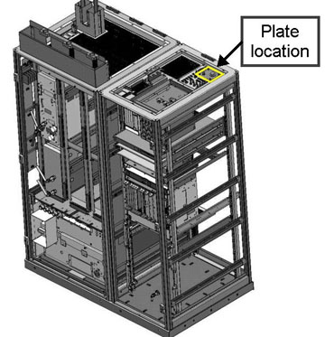
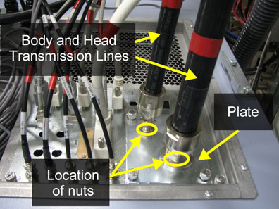

Operating Documentation
Direction 5500113, Rev# 3
Discovery MR750 3.0T Service Methods
Module Version 4.0, Version Date 5/27/09
Operating Documentation |
| Required Persons | Preliminary Reqs | Procedure | Finalization |
|---|---|---|---|
| 1 | Not Applicable | 2 hours | 1 hour |
| Item | Qty | Effectivity | Part# | Manufacturer | |
|---|---|---|---|---|---|
| Hoist Service Kit | 1 | - | 5196226 | - | |
| Service Platform | 1 | - | 5155291-2 | - | |
| Adjustable Wrench | 1 | - | - | - | |
| Phillips-Head Screwdriver (+) | 1 | - | - | - | |
| Item | Qty | Effectivity | Part# | Manufacturer |
|---|---|---|---|---|
| Tie-Wrap | 2 | - | - | - |
| Item | Qty | Effectivity | Part# | Manufacturer | |
|---|---|---|---|---|---|
| RF Body Transmit Cable | 1 | - | See FRU Manual | - | |
| RF Head Transmit Cable | 1 | - | See FRU Manual | - | |
| ||||
| possible personal injury or equipment damage! | ||||
| the module could fall when using the lift tool. | ||||
| before putting weight on the hoist chain, be sure that the links are aligned properly. this will help keep the chain from binding up, or becoming kinked, which is nearly impossible to correct when the chain is under tension. |
| Condition | Reference | Effectivity |
|---|---|---|
The power in the cabinet needs to be off. Perform Lockout / Tagout for PGR PDU / Gradient Subsystem. | - | - |
The power in the cabinet needs to be off. Perform Lockout / Tagout for PGR PDU / Gradient Subsystem.
Using an adjustable wrench, disconnect the RF Body or Head Transmit Cable from the front of the RF Amplifier, as shown in Illustration 1.
Illustration 1: RF Amplifier Location in PGR Cabinet

Use the RF Amplifier Replacement procedure to remove the RF Amplifier.
After labeling the cable as “defective,” use a tie-wrap to secure the defective cable to the side of the PGR Cabinet.
Set up the Service Platform in front of the PGR Cabinet.
| NOTE: | Verify that safety rails are in place prior to using the Service Platform. |
Using an adjustable wrench, remove body and head transmission lines from the plate at the top of the PGR Cabinet (shown in Illustration 2), and place out of the way. See Illustration 3 for a close-up of the transmission lines.
Illustration 2: Plate Location on PGR Cabinet

Illustration 3: Body and Head Transmission Lines

Remove nuts from the base of where the body and head transmissions lines were attached using an adjustable wrench. See Illustration 3.
Remove plate shown in Illustration 3 by loosening 4 thumb scews.
Disconnect the Bulkhead IF Connector from defective cable and save.
After labeling the failed cable end as “defective,” coil up and secure with tie-wrap to rear of cabinet.
Coil remaining portion of failed cable excess into a small loop, secure, and position at rear of cabinet behind RF amp.
| NOTE: | Ensure to remove right XRFD slide rail from cabinet. |
From top of PGR Cabinet route end of cable with 90 degree connector into cabinet so that it passes through area between removed slide rail and cabinet cover, and excess ultimately exits from bottom cabinet front.
Reinstall the slide rail and then attach IF bulkhead connector to straight end of cable and attach cabinet IF plate.
Reattach and secure nuts to IF connectors and secure plate.
Reinstall RF Amplifier.
| NOTE: | Be careful to avoid damaging the newly installed RF Transmit cable. |
Reconnect all cabling in the front and back of the RF Amplifier and at the top of the PGR Cabinet.
Restore the power using Lockout / Tagout of PGR PDU / Gradient Subsystem.